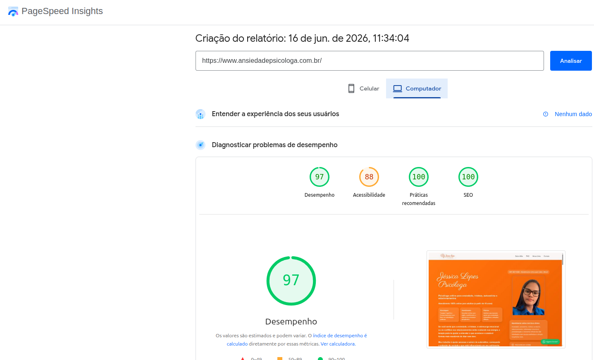

Depoimento
O que a Jéssica disse
Fui ler o site com mais calma e eu amei! Ficou muito legal, você fez um ótimo trabalho!
97 Performance desktop
100 SEO Lighthouse
Multi-página + blog

Case Study
Psicóloga Jéssica Lopes — especialista em ansiedade e relacionamentos, atendendo presencial em São Paulo e online no Brasil todo.
Antes do site, a Jéssica atendia quase exclusivamente por indicação. Não tinha presença online estruturada — quem buscava por ela no Google não encontrava nada, e quem buscava por "psicóloga ansiedade", "primeira sessão", "psicoterapia online" também não chegava até ela.
O objetivo era criar um site completo de captação: home focada em conversão, rotas internas, artigos e blog com links entre páginas — ampliando a superfície indexável para buscas long-tail. Conversão direta no WhatsApp, base técnica de SEO e autoridade visual. Posição no Google depende também de concorrência, backlinks externos e esforço contínuo da cliente.
Estruturei um site multi-página — home de conversão na primeira dobra e rotas internas com conteúdo aprofundado:
HTML5, CSS3 e JavaScript vanilla — sem frameworks pesados. Foco em Core Web Vitals e carregamento < 2s no mobile.
Google Tag Manager + dataLayer. Push de eventos de clique em todos os CTAs e submit de formulário, capturados pelo GTM e enviados ao GA4.
Home + rotas internas + blog com artigos indexáveis. Internal linking entre páginas para ampliar superfície de conteúdo e buscas long-tail.
WhatsApp como canal principal — botões com mensagem pré-preenchida por contexto em home, rotas e artigos.
Schema.org (Person + FAQPage), meta tags por página, sitemap.xml, robots.txt, OpenGraph e internal linking no blog.
Métricas do que entregamos no código — posição no Google depende também de backlinks, concorrência e esforço contínuo do cliente.

Mais do que números: a Jéssica passou a ter um endereço próprio na internet — profissional, com FAQ e CTA direto. Quem recebe o link ou busca pelo nome encontra; subir posições exige trabalho além do site.
Depoimento
Fui ler o site com mais calma e eu amei! Ficou muito legal, você fez um ótimo trabalho!
Eu construo sites para pequenos negócios com home de conversão, rotas internas, blog, SEO técnico e tracking via GTM — a base certa; visibilidade orgânica depende também do cliente e do mercado.